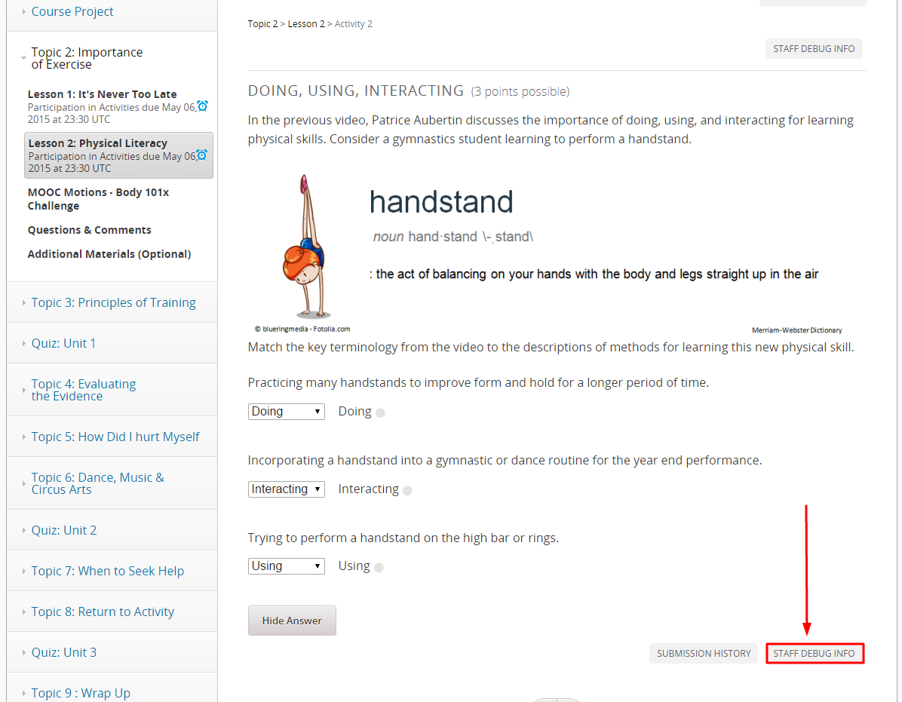
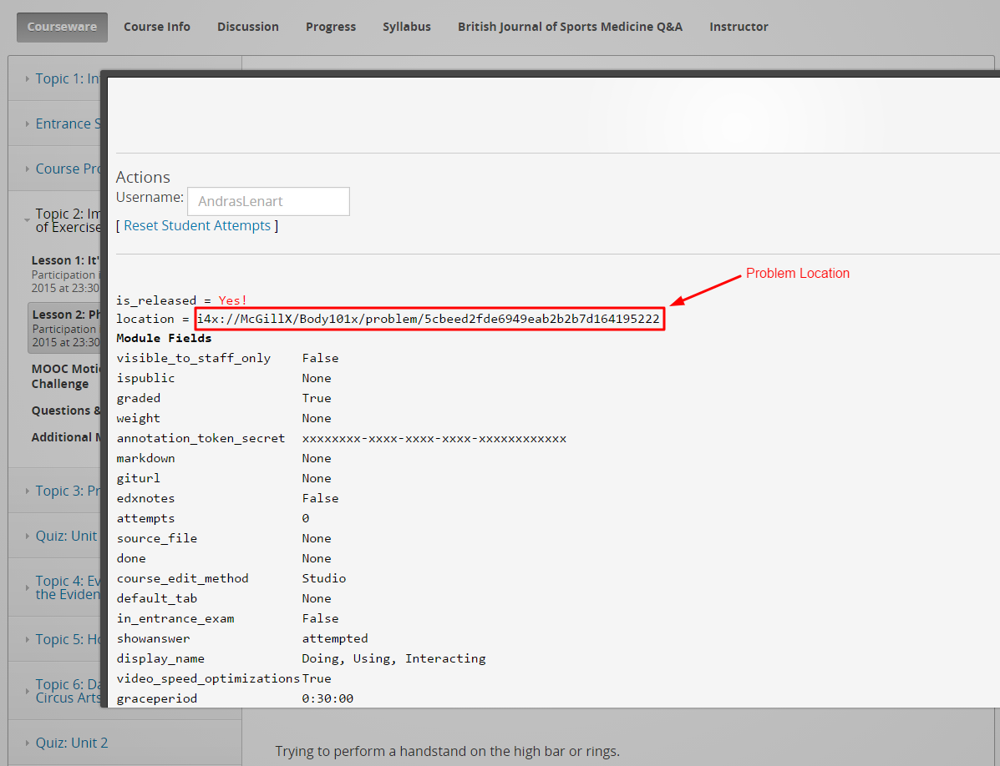
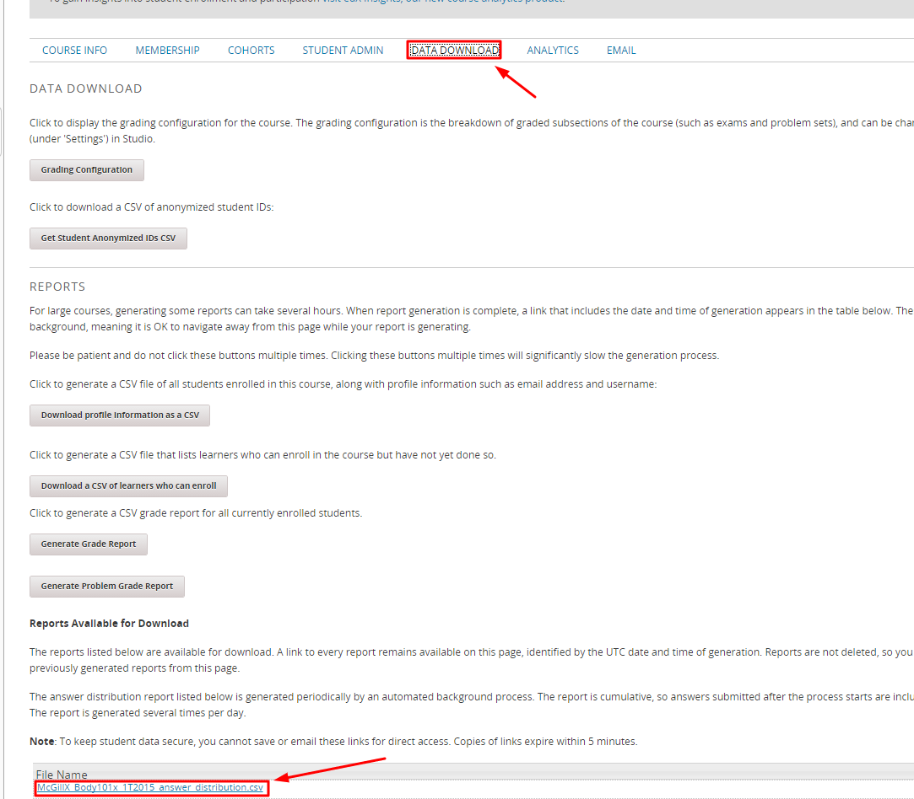
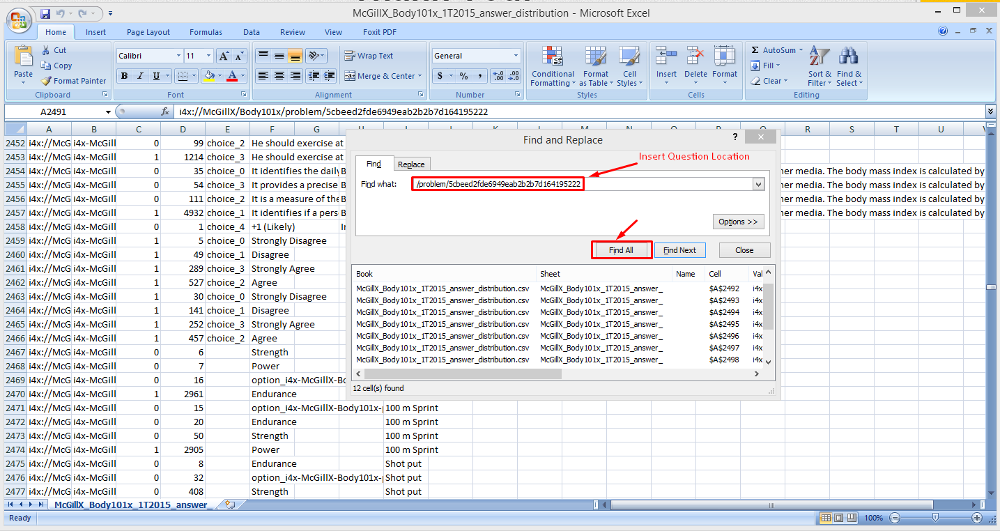

Download Class Results to a Problem¶
- Find the problem location in the courseware.
- Click STAFF DEBUG INFO, and note the location.
- Then go to the Instructor tab, click DATA DOWNLOAD, and click answer_distribution.csv.
- Open this downloaded file, and use the search function to find the problem location you found in the STAFF DEBUG INFO.



